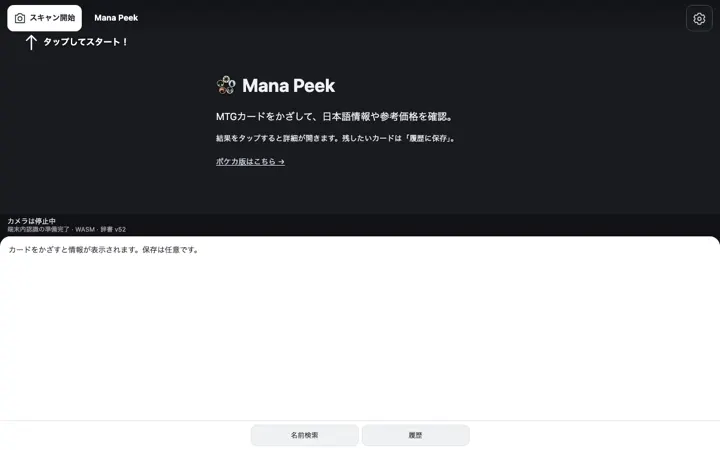
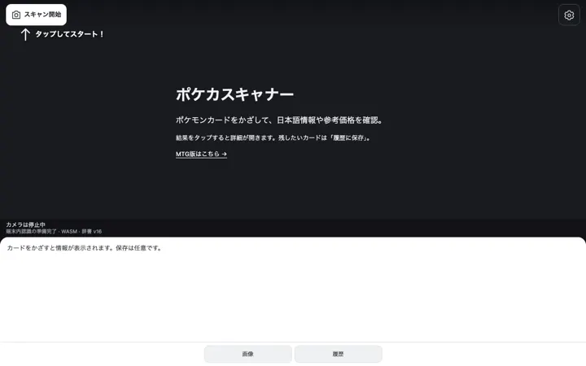
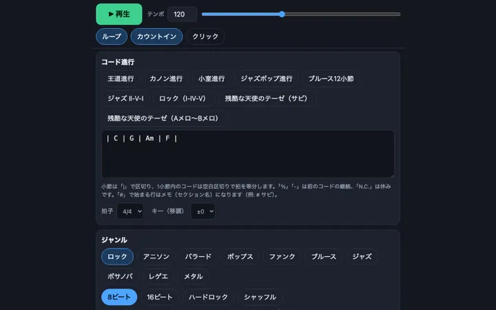
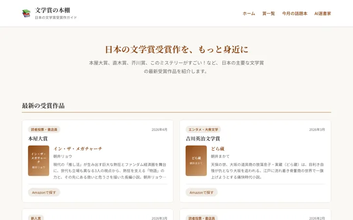
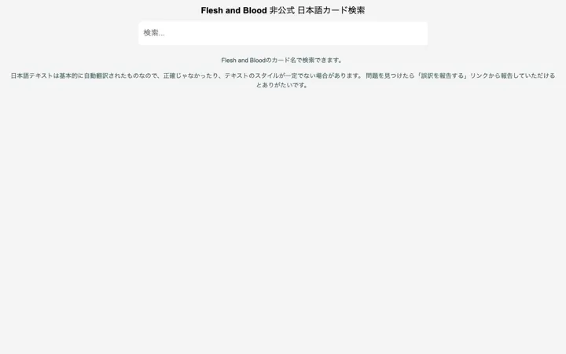

-
-

-

-

-

Flesh and Blood 非公式 日本語カード訳
ikdsk.github.io/fabjpFlesh and Blood のカードを名前で検索できる非公式の日本語訳。訳文は自動翻訳が中心です。
気の向くままに、AIと作った小さなアプリの置き場。





Flesh and Blood のカードを名前で検索できる非公式の日本語訳。訳文は自動翻訳が中心です。